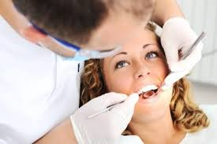
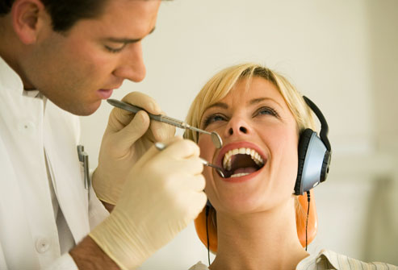

Adults
-

Dental disease is preventable
Some people think tooth decay is just for children, but did you know you are at risk your whole life? Untreated dental disease can lead to serious health problems such as infection, damage to bone or nerve and tooth loss. Dental infections that are left untreated can even spread to other parts of the body and, in very rare cases, can be life threatening.
The good news is that dental disease is preventable. You can practice preventive dentistry on yourself by adopting these healthy habits: Always remember to brush your teeth twice a day, floss between teeth once a day, eat a balanced diet and limit between-meal snacks. And don't forget to schedule regular dental visits. By following a healthy dental routine and making smart food choices, you can lower your risk for tooth decay.
-

Healthy Habits
Brushing
Brushing your teeth is the cornerstone of any good oral hygiene routine. To keep your teeth and gums healthy, always be sure to brush your teeth twice a day with a soft-bristled brush. The size and shape of your brush should fit your mouth allowing you to reach all areas easily. Also, don’t forget to replace your toothbrush every three or four months or sooner if the bristles are frayed. A worn toothbrush won’t do a good job of cleaning your teeth. Finally, make sure to use an ADA-accepted fluoride toothpaste. It makes no difference whether you choose a manual or powered toothbrush—just make sure to brush twice a day, every day!
Flossing
Flossing goes hand in hand with brushing. By flossing once a day, you help to remove plaque from between your teeth in areas where the toothbrush can't reach. Flossing can be done with dental floss or another product made specifically to clean between the teeth like pre-threaded flossers, tiny brushes that reach between the teeth, water flossers, or wooden plaque removers. It is extremely important to floss because plaque that is not removed by brushing and flossing can eventually harden into calculus or tartar. Once tartar has formed, it can only be removed by a professional cleaning.
-
Nutrition
As you know, a balanced, nutritious diet is essential to healthy living. Poor nutrition can lead to all kinds of health issues, including oral health problems such as gum disease and cavities. In fact, studies show that people who have lost teeth or wear dentures don't eat as many fruits or vegetables and tend to have less nutritious diets overall.
A balanced diet should include:
Fruits and vegetables Combined these should be half of what you eat every day.
Grains Make sure at least half of the grains you eat are whole grains, such as oatmeal, whole wheat bread and brown rice.
Dairy Choose low-fat or fat-free dairy foods.
Lean proteins Make lean protein choices, such as lean beef, skinless poultry and fish. Try and vary your protein choices to include eggs, beans, peas and legumes, too. Eat at least 8 oz. of seafood a week.